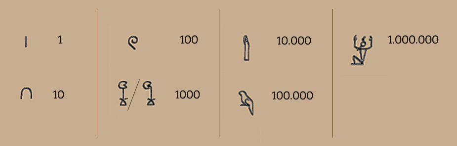

0123456789
Die Ziffern und Zahlen das sind die ältesten Symbolen auf der Welt. Die erste Ziffern waren einfach die Linien 1Linie=1 und 2Linie=2.

Ägyptische Zahlen

Römesche Zahlen I II III IV V VI VII VIII IX X
Die Ziffern sind wichtigste Symbolen in unsern Leben, weil wir können zählen z.B wie viel Äpfel haben wir. deswegen Ziffern sind am wichtigsten.